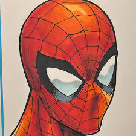
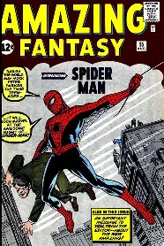
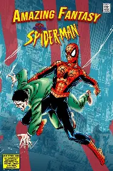

Spider Man

About
Spider-Man is a superhero appearing in American comic books
published by
Marvel Comics.
Created by writer-editor
Stan Lee and artist
Steve Ditko, he
first appeared in the anthology comic book
Amazing Fantasy
#15 (August 1962) in the Silver Age of Comic Books. He has
been featured in comic books, television shows, films, video games,
novels, and plays
Publication Info
Created by
Creation & Development
In 1962, with the success of the Fantastic Four, Marvel Comics editor and
head writer Stan Lee was casting for a new superhero idea. He said the
idea for Spider-Man arose from a surge in teenage demand for comic books
and the desire to create a character with whom teens could identify. As
part of the Fantastic Four, Lee saw Spider-Man as an opportunity to "get
out of his system" what he was missing in comic books. In this
autobiography, a 1960s and non-superhuman pulp magazine crime fighter the
Spider as a reference, and in a multitude of print and video interviews,
Lee claims he was further inspired by seeing a spider climb up a
wall—adding in his autobiography that he has told that story so often he
has become unsure of whether or not this is true.


